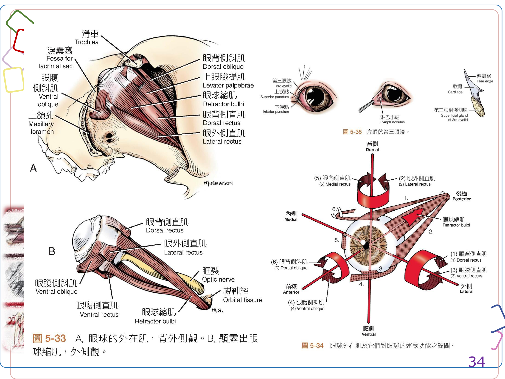
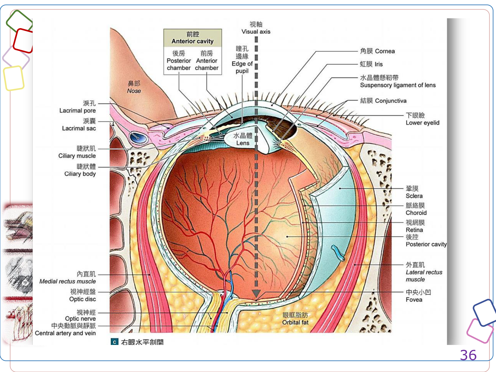
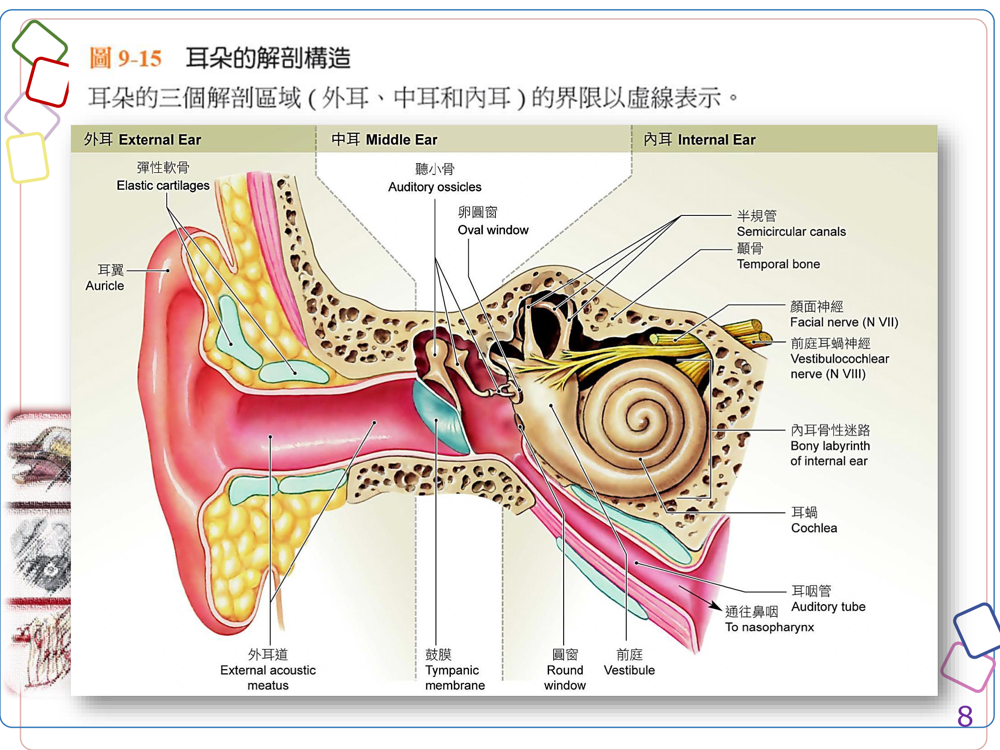
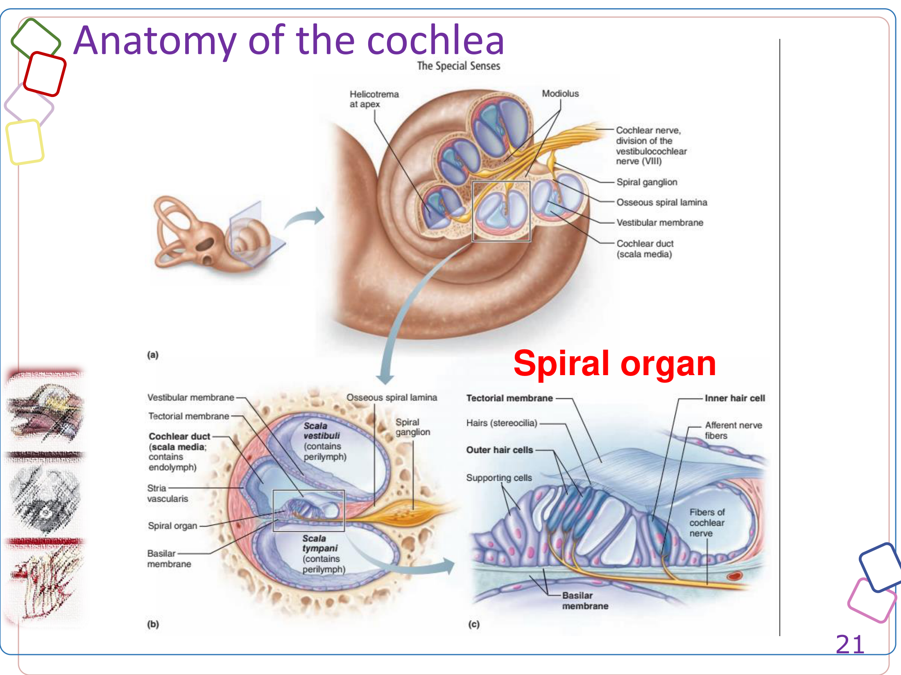
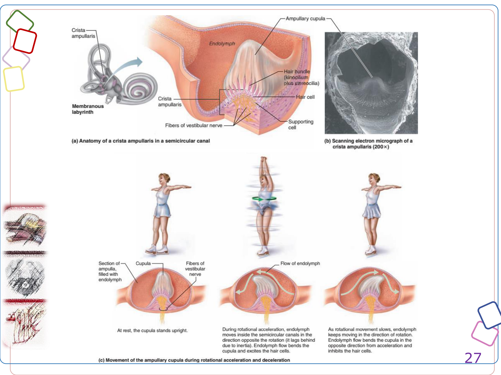

特殊感覺總論 Special Senses Overview
感覺（sense）依受器分布範圍分為「一般感覺（general senses）」與「特殊感覺（special senses）」兩大類，本頁整理課堂講義《The General and Special Senses I／II》的內容，先建立兩者的區分概念，再依序整理視覺、聽覺與平衡、嗅覺、味覺各系統的構造與功能。
受器廣泛分布全身（皮膚、關節、肌肉、內臟），包括痛覺（nociceptors）、溫度覺（thermoreceptors）、機械覺（mechanoreceptors：觸覺／壓覺／本體感覺）、化學覺（chemoreceptors）。
受器侷限於頭部特定區域，為構造獨立、高度特化的感覺器官：視覺（sight）、聽覺（hearing）、平衡（balance）、嗅覺（smell）、味覺（taste）。
特殊感覺受器多為「神經樣上皮細胞（neuronlike epithelial cells）」或小型周邊神經元，將感覺訊息傳給對應的腦神經（cranial nerves）——這是特殊感覺與一般感覺在解剖學上最大的差異：一般感覺經由脊神經或腦神經廣泛的周邊分支傳入，特殊感覺則各自對應固定的腦神經（II 視神經、VIII 前庭耳蝸神經、I 嗅神經、VII／IX／X 部分味覺傳導）。
本頁章節架構
- 一般感覺受器：痛覺、溫度覺、機械覺（觸覺受器、壓力受器、本體感覺受器）、化學覺受器的分類與分布，作為特殊感覺的背景知識。
- 視覺系統：眼眶（orbit）、眼附屬構造（眼瞼、淚器、眼外肌）、眼球三層構造（纖維膜、血管膜、視網膜）、視覺路徑。
- 聽覺與平衡系統：外耳、中耳（聽小骨）、內耳（耳蝸負責聽覺、前庭與半規管負責平衡）、聲波傳導路徑、聽覺與前庭路徑。
- 嗅覺與味覺：嗅覺上皮與嗅球、犁鼻器；味蕾與舌乳頭分類。
- 特殊感覺相關腦神經：整理 CN II、III、IV、V、VI、VII、VIII、IX、X 中與眼、耳、鼻、舌相關的感覺／運動／副交感分支，方便對照理學檢查（如瞳孔對光反射、前庭眼反射）背後的神經路徑。
一般感覺受器 General Sensory Receptors
一般感覺受器廣泛分布全身，依感受的刺激型態分為痛覺、溫度覺、機械覺、化學覺四大類，是理解後續特殊感覺受器（如觸覺盤、毛細胞）分類邏輯的基礎。
痛覺受器 Nociceptors
又稱痛覺受器，多為游離神經末梢（free nerve endings），廣泛分布於皮膚淺層、關節囊、骨膜與血管壁周圍，感受範圍大（large receptor fields）。
具髓鞘 A 型纖維傳導，訊息快速到達中樞，對應刺痛或切割傷。
較細、無髓鞘的 C 型纖維傳導，訊息傳導慢，對應燒灼痛或悶痛。
部分內臟器官的痛覺訊息經由相同脊神經背根傳入脊髓，臨床上表現為體表特定區域的疼痛（例如心臟疾病牽連左上肢）。
溫度覺受器 Thermoreceptors
分布於真皮、骨骼肌、肝臟與下視丘，以游離神經末梢形式存在，訊息經由與痛覺相同的路徑（外側脊髓丘腦徑）傳導。冷覺受器數量約為熱覺受器的3–4倍。
機械覺受器 Mechanoreceptors
感受牽張、壓縮、扭轉或形變的刺激，可分為三類：
| 類型 | 說明 |
|---|---|
| 觸覺受器 Tactile receptors | 提供觸覺、壓覺與震動覺，再細分為未包覆型與包覆型（見下表） |
| 壓力感受器 Baroreceptors | 監測器官容積／壓力變化，分布於胃、小腸、膀胱、頸動脈、肺、大腸等，參與血壓與自主神經反射調控 |
| 本體感覺受器 Proprioceptors | 監測關節位置、肌腱張力與肌肉纖維長度變化，包括高基氏肌腱器（Golgi tendon organ，偵測肌腱張力）、肌梭（muscle spindle，偵測肌肉長度變化）、關節囊內感受器 |
觸覺受器細分
| 類型 | 構造 | 分布／功能 |
|---|---|---|
| 未包覆型 Unencapsulated | 游離神經末梢 | 位於表皮細胞間，對觸壓覺敏感 |
| 觸覺盤 Tactile disc（Merkel's discs） | 精細觸壓覺受器，神經元樹突延伸進表皮深層細胞 | |
| 毛根叢 Root hair plexus | 偵測毛髮變形與移動，觸發眨眼等反射 | |
| 包覆型 Encapsulated | 觸覺小體 Tactile corpuscle（Meissner's） | 位於真皮乳頭層，精細觸覺／低頻震動，常見於眼瞼、唇、指尖、乳頭、生殖器 |
| 層板小體 Lamellated corpuscle（Pacinian） | 位於皮下組織，感受深層壓覺、脈動與高頻震動 | |
| 路氏小體 Ruffini corpuscle | 位於真皮層，對壓力與扭轉力敏感 |
化學覺受器 Chemoreceptors
偵測化學物質濃度的微小變化，對水溶性或脂溶性物質產生反應，分布於延髓呼吸中樞附近（對腦脊髓液 pH、CO₂敏感）、頸動脈體（對血液 pH、CO₂、O₂敏感，經 CN IX 傳入）、主動脈體（經 CN X 傳入），共同參與呼吸與心血管反射調節。
視覺系統 Vision (Eye)
視覺系統包含容納眼球的骨性眼眶、附屬的眼瞼／淚器／眼外肌，以及眼球本身三層構造（纖維膜、血管膜、視網膜），最後訊息經視神經傳導至大腦視覺皮質。
眼眶 Orbit
眼眶是容納眼球的骨性腔室：眶緣由額骨、淚骨、上頜骨、顴骨與外側的眶韌帶（orbital ligament）構成；內側為額骨、前蝶骨、淚骨部分；腹側壁由顴腺與翼肌構成；背側與外側壁主要由顳肌構成。眼眶後部三個重要開口（由吻側至尾側）：視神經管（optic canal，供CN II通過）、眶裂（orbital fissure，供CN III、IV、VI與CN V眼神經支通過）、前翼孔（rostral alar foramen）。
眼鞘（periorbita，又稱眶骨膜）是一層包覆眼球及其肌肉、血管、神經的圓錐形結締組織與平滑肌鞘，其尖端（apex）朝尾側附著於視神經管與眶裂的骨性邊緣，並與顱內硬腦膜延續；吻側則展開與臉部骨膜融合，其結締組織（眶隔）並延伸進入眼瞼。
眼附屬構造 Accessory Structures of the Eye
睫毛含毛根叢，觸發眨眼反射；眼瞼相關腺體包括瞼板腺（tarsal gland）、淚腺（lacrimal gland）、淚阜（lacrimal caruncle）。犬貓具有第三眼瞼（third eyelid，瞬膜），內含軟骨支架與淺表腺。
覆蓋眼瞼內側面（瞼結膜）與眼球前部表面（球結膜）的上皮組織，為眼瞼與眼球之間的過渡黏膜。
淚器（lacrimal apparatus）負責製造、分泌與排泄眼淚，由四部分組成：(1) 淚腺與相關排管；(2) 淚管（lacrimal canaliculus）；(3) 淚囊（lacrimal sac）；(4) 鼻淚管（nasolacrimal duct，最終開口於鼻腔）。眼房液（aqueous humor）則由睫狀體上皮分泌至後房，經瞳孔至前房，再經虹膜角膜交界處的鞏膜靜脈竇回流至靜脈系統，兩者是不同的液體循環系統，臨床上分別對應「流淚」與「眼壓調控（青光眼相關）」兩種不同機轉。
眼外肌 Extrinsic Muscles of the Eyeball
所有眼外肌皆止於鞏膜（sclera）表面，依支配的腦神經整理如下：
| 肌肉 | 功能 | 支配腦神經 |
|---|---|---|
| 背側直肌／內側直肌／腹側直肌 Dorsal／Medial／Ventral rectus | 轉動眼球 | 動眼神經 CN III |
| 外側直肌 Lateral rectus | 轉動眼球（外展） | 外旋神經 CN VI |
| 眼球縮肌 Retractor bulbi | 四條肌束環繞視神經，將眼球向後拉入眼眶 | 外旋神經 CN VI |
| 背側斜肌 Dorsal oblique | 經滑車（trochlea）改變肌腱方向後止於眼球 | 滑車神經 CN IV |
| 腹側斜肌 Ventral oblique | 協助眼球旋轉 | 動眼神經 CN III |
| 上眼瞼提肌 Levator palpebrae superioris | 提起上眼瞼 | 動眼神經 CN III |

臨床提醒：CN III（動眼神經）支配多數眼外肌與瞳孔括約肌／睫狀肌（副交感），CN III麻痺會造成瞳孔放大、眼球外斜視、上眼瞼下垂；CN VI（外旋神經）麻痺則造成眼球無法外展、內斜視。理學檢查中的「眼球震顫（nystagmus）」與前庭系統（CN VIII）及此處眼外肌的協調密切相關（見聽覺與平衡章節）。
眼球構造 Bulbus Oculi
眼球壁由外而內分為三層：
| 層次 | 組成 | 功能 |
|---|---|---|
| 纖維膜 Fibrous tunic（外層） | 鞏膜（sclera）＋角膜（cornea，為特化透明的鞏膜） | 提供保護與眼外肌附著點 |
| 血管膜 Vascular tunic（中層） | 虹膜（iris）、睫狀體（ciliary body）、脈絡膜（choroid），內含血管、淋巴管與眼內在肌 | 調節入眼光量、分泌與再吸收眼房液、控制水晶體形狀 |
| 視網膜 Retina（內層） | 外層色素部分＋內層神經部分（視覺感受器、支持細胞、神經元） | 吸收穿過神經部分的光線、將視覺訊息轉換為神經訊號 |

自主神經對眼內在肌的調控
放射狀平滑肌，由交感神經支配，收縮使瞳孔放大（散瞳）。
環狀平滑肌，由副交感神經（CN III）支配，收縮使瞳孔縮小（縮瞳），是瞳孔對光反射（PLR）的傳出路徑之一。
視網膜 Retina
視網膜由外層較薄的色素部分與內層較厚的神經部分構成。神經部分包括：
- 視覺感受器（photoreceptors）：桿狀細胞（rods，對光敏感、無法辨色，負責昏暗環境視覺）與錐狀細胞（cones，提供色覺）。
- 支持細胞與執行視覺訊息初步處理、整合的神經元（雙極細胞 bipolar cells、神經節細胞 ganglion cells、水平細胞 horizontal cells、無軸突細胞 amacrine cells）。
- 黃斑（macula lutea）中央處的中央小凹（fovea）錐狀細胞密度最高，是視覺最敏銳處。
- 視神經盤（optic disc，盲點 blind spot）：約百萬條神經節細胞軸突匯聚形成第二對腦神經（視神經）的起點，此處沒有視覺感受器，光線投射在此不被察覺。
視網膜剝離（detached retina）：當眼睛受到突然撞擊，可能造成視網膜色素部分與神經部分分開，是眼外傷的重要併發症之一。
視覺路徑 The Visual Pathway
在視交叉處，部分神經纖維交叉，使每個大腦半球接收到來自同側視網膜外側一半與對側視網膜內側一半的視覺訊息；大腦視覺聯絡區負責整合訊息並合成完整視野影像。
聽覺與平衡系統 Equilibrium and Hearing (Ear)
顳骨內耳中的感受器負責平衡與聽覺兩種特殊感覺，共同的感受單元是毛細胞（hair cell，一種機械性感受器）。耳朵解剖上分為外耳、中耳、內耳三個區域。
耳朵的三個解剖區域
| 區域 | 組成 | 功能 |
|---|---|---|
| 外耳 External ear | 耳翼（auricle，彈性軟骨構成）、外耳道（external acoustic meatus）、耵聹腺（ceruminous gland） | 收集並引導聲波至鼓膜（tympanic membrane） |
| 中耳 Middle ear | 顳骨內的腔室，含三塊聽小骨、耳咽管（auditory tube） | 收集鼓膜震動並放大後傳至內耳 |
| 內耳 Internal ear | 骨性迷路（bony labyrinth）包覆膜性迷路（membranous labyrinth），含耳蝸與前庭器 | 耳蝸負責聽覺，前庭與半規管負責平衡 |

外耳 External Ear
由耳翼（auricle）與外耳道（external acoustic meatus）組成。耳翼由彈性軟骨構成，保護外耳道開口；耵聹腺分泌蠟狀物質；外耳道終點止於鼓膜。犬的外耳道分為垂直部（vertical canal）與水平部（horizontal canal），臨床上外耳炎常因此構造彎曲而使異物、分泌物滯留。
中耳 Middle Ear
藉鼓膜與外耳分隔，透過耳咽管（auditory tube，又稱歐氏管）與鼻咽相連，負責平衡鼓膜兩側的壓力。微生物經由鼻咽入侵中耳造成發炎，稱為中耳炎（otitis media）。
聽小骨 Auditory Ossicles
中耳內包含三塊聽小骨，聲波經鼓膜震動依序傳送：
| 聽小骨 | 位置／連接 |
|---|---|
| 鎚骨 Malleus | 藉三點連接於鼓膜內側面 |
| 砧骨 Incus | 介於中間，分別連接鎚骨與鐙骨 |
| 鐙骨 Stapes | 基底部附著於卵圓窗（oval window），將震動傳入內耳 |
中耳腔室內另有兩條小肌肉保護鼓膜與聽小骨免受巨大噪音侵襲：鼓膜張肌（tensor tympani muscle）與鐙骨肌（stapedius muscle）。
內耳 Internal Ear
平衡與聽覺的感受器皆位於內耳膜性迷路（membranous labyrinth）內；骨性迷路（bony labyrinth）由緻密骨構成，包圍並保護內部的膜性迷路。兩者之間充滿類似腦脊髓液的液體，稱為外淋巴（perilymph）；膜性迷路內部則充滿內淋巴（endolymph）。
| 骨性迷路 | 膜性迷路 | 功能 | 感受區域 |
|---|---|---|---|
| 半規管 Semicircular canals | 半規導管 Semicircular ducts | 平衡：旋轉（角）加速度 | 壺腹嵴 Crista ampullaris |
| 前庭 Vestibule | 橢圓囊與球狀囊 Utricle and saccule | 平衡：頭部相對重力位置、直線加速度 | 聽斑 Macula |
| 耳蝸 Cochlea | 耳蝸管 Cochlear duct（scala media） | 聽覺 | 螺旋器官 Spiral organ |
耳蝸與螺旋器官（聽覺）
骨性耳蝸內含充滿膜性迷路的耳蝸管（cochlear duct），管內的感受器（螺旋器官／柯蒂氏器 spiral organ）負責提供聽覺。耳蝸管內以前庭階（scala vestibuli）與鼓階（scala tympani）兩側充滿外淋巴，耳蝸管本身（scala media）充滿內淋巴。螺旋器官上有內毛細胞（inner hair cell）與外毛細胞（outer hair cells），其上覆蓋覆膜（tectorial membrane），基底膜（basilar membrane）震動使毛細胞的靜纖毛（stereocilia）偏折而產生神經衝動。

聲波傳導路徑 Route of Sound Waves through the Ear
聽覺路徑 Auditory Pathway
前庭系統（平衡） Vestibular System
前庭（vestibule）與半規管（semicircular canals）合稱前庭器（vestibular complex），負責偵測頭部相對重力的位置、直線加速度與旋轉（角）加速度。
包含一對膜性囊：球狀囊（saccule）與橢圓囊（utricle），內含聽斑（macula）——毛細胞頂端覆蓋含耳石（otoliths）的耳石膜（otolith membrane）。頭部位置改變或直線加速時，耳石因重力／慣性移動，帶動毛細胞纖毛偏折，靜纖毛朝動纖毛（kinocilium）方向偏折時細胞去極化（興奮），反方向偏折則過極化（抑制）。
三條半規管互相垂直排列，各自壺腹（ampulla）內有壺腹嵴（crista ampullaris），其毛細胞纖毛埋於膠質的壺腹帽（cupula）中。頭部旋轉時，半規管內內淋巴因慣性相對滯後流動，推動壺腹帽偏移而刺激毛細胞，偵測旋轉（角）加速度。

毛細胞的機轉
毛細胞（hair cell）表面含80–100根非常長的微絨毛稱為靜纖毛（stereocilia），前庭內另有一根較粗的動纖毛（kinocilium）。靜纖毛朝動纖毛方向偏移時，鉀離子通道開啟使細胞去極化，刺激毛細胞、增加感覺神經元動作電位頻率；反方向偏移則抑制毛細胞活動。這是全身唯一利用「機械性開關離子通道」而非傳統神經傳導物質受器的初級感覺轉換機轉之一。
前庭路徑與前庭核 Vestibular Pathway & Nuclei
前庭神經（CN VIII 的前庭支）將訊息傳入位於第四腦室底部的前庭核（vestibular nuclei）。前庭核接受前庭神經持續活動的軸突輸入，發出反射性路徑活化支配眼肌、頸肌、四肢伸肌的運動神經元；直接或經網狀結構間接調節伸肌張力，以維持身體直立姿勢與眼球穩定（前庭眼反射）。
臨床提醒：前庭疾病（如中耳/內耳炎經卵圓窗或圓窗蔓延、特發性前庭症候群）常見臨床表徵包括頭部歪斜（head tilt）、眼球震顫（nystagmus）、共濟失調（ataxia）、斜圈行走（circling），需與小腦性或中樞性前庭疾病做鑑別診斷（周邊前庭病灶通常水平/旋轉性眼震且快相背離患側，中樞性則可能出現垂直性眼震）。
嗅覺與味覺 Olfaction & Gustation
嗅覺與味覺同屬化學感覺，分別偵測空氣中的揮發性分子與唾液溶解的化學物質，兩者訊息傳導路徑不同：嗅覺是唯一不經過丘腦、直接投射到大腦皮質的特殊感覺。
嗅覺 Olfaction (Smell)
嗅覺器官（olfactory organs）位於鼻中隔兩側的鼻腔內，涵蓋篩板（cribriform plate）下面、篩骨垂直板上方部分以及上鼻甲（superior nasal concha）。嗅覺上皮（olfactory epithelium）由三種細胞組成：
- 嗅覺受器細胞 Olfactory receptors：雙極神經元，樹突端有嗅纖毛（olfactory cilia）伸入黏液層感受氣味分子，軸突穿過篩板進入嗅球（olfactory bulb）與二尖細胞（mitral cell）在嗅小球（glomerulus）形成突觸。
- 支持細胞 Supporting cells：類似上皮細胞，支持並隔離嗅覺受器細胞。
- 基底細胞 Basal cells（幹細胞）：可分裂分化以取代剝落的嗅覺受器細胞——嗅覺受器細胞是少數能持續再生的神經元之一。
嗅覺路徑
嗅覺是唯一直接到達大腦皮質的特殊感覺，不需經過丘腦轉接，這也是嗅覺容易直接誘發強烈情緒／記憶反應的解剖學基礎。
犁鼻器 Vomeronasal Organ
又稱犁鼻器官（vomeronasal organ, VNO），位於鼻中隔基部兩側，接收犁鼻神經（vomeronasal nerves）支配。主要負責偵測費洛蒙（pheromones）等非揮發性化學訊息，與嗅覺主系統分開處理，在犬貓的社交／生殖行為（如公貓的裂唇嗅反應 flehmen response）中扮演重要角色。嗅神經路徑為：三叉神經→眼神經支→鼻睫神經→篩骨神經（傳導部分鼻黏膜的一般感覺，需與嗅神經 CN I 的化學感覺區分）。
味覺 Gustation (Taste)
舌頭表面由舌乳頭（papillae）構成，舌乳頭內含味蕾（taste buds），味蕾由味覺細胞（gustatory cells）組成，每個味覺細胞具有伸入味孔（taste pore）的細長微絨毛（microvilli）感受溶於唾液的化學物質。
傳統「舌頭味覺分區地圖」（甜在舌尖、鹹在舌尖兩側、酸在舌緣、苦在舌根）常見於教學講義，但現代生理學認為各類型味覺受器其實廣泛分布於整個味蕾群，分區僅為敏感度略有差異，臨床應用時不必過度拘泥此簡化模型。
舌乳頭分類
| 舌乳頭 | 分布 | 特徵／功能 |
|---|---|---|
| 絲狀乳頭 Filiform papillae | 遍布舌背，數量最多、體積最小 | 不含味蕾，角質化程度高，協助舔舐與保護深層構造，由三叉神經分支（舌神經）之觸覺受器支配 |
| 蕈狀乳頭 Fungiform papillae | 舌吻側三分之二，舌尖與舌緣最密集 | 菇狀，數量次多，含味蕾 |
| 輪廓乳頭 Circumvallate papillae | 舌根附近 | 體積最大，周圍有環狀溝，味蕾密度最高，對苦味敏感 |
| 葉狀乳頭 Foliate papillae | 舌兩側後段的短垂直皺褶 | 含多個味蕾，漿液腺分泌物沖洗味蕾表面以保持敏感度 |
| 圓錐乳頭 Conical papillae | 舌尾側三分之一 | 機械性與觸覺功能為主，由舌咽神經（CN IX）支配 |
| 邊緣乳頭 Marginal papillae | 新生犬舌緣 | 協助吸乳時防止乳汁溢出舌面，隨斷奶後改為固體飲食而逐漸消失 |
味覺傳導路徑
味覺訊息依舌頭部位由不同腦神經傳導：舌吻側三分之二（絲狀、蕈狀乳頭區）由顏面神經（CN VII，經鼓索神經 chorda tympani）傳導；舌尾側三分之一（輪廓、葉狀、圓錐乳頭區）與軟腭由舌咽神經（CN IX）傳導；會厭區則由迷走神經（CN X）傳導。訊息經孤束核（nucleus solitarius）中繼，上傳至丘腦核，最終抵達大腦味覺皮質（gustatory cortex）。舌頭的一般感覺（觸壓、溫度、痛覺，非味覺）則由三叉神經（CN V）負責。
特殊感覺相關腦神經 Cranial Nerves of the Special Senses
特殊感覺高度依賴特定腦神經傳導，理學檢查（如瞳孔對光反射、角膜反射、前庭眼反射）本質上就是在測試對應腦神經迴路的完整性。本節整理與眼、耳、鼻、舌相關的腦神經功能。
| 腦神經 | 運動 | 感覺 | 副交感 |
|---|---|---|---|
| CN I 嗅神經 Olfactory | — | 嗅覺 | — |
| CN II 視神經 Optic | — | 視覺 | — |
| CN III 動眼神經 Oculomotor | 上眼瞼提肌、除背側斜肌與外側直肌外的所有眼外肌 | — | 睫狀肌、瞳孔括約肌 |
| CN IV 滑車神經 Trochlear | 背側斜肌 | — | — |
| CN V 三叉神經 Trigeminal | （下頜支：咀嚼肌） | 眼球、結膜、眼周皮膚、嗅覺黏膜（眼神經支V1）；顳頂區皮膚、下眼瞼（上頜神經支V2）；鼻腔黏膜、硬腭軟腭（翼腭神經）；上頜牙齒、鼻部與上唇皮膚（眶下神經）；下頜牙齒、下唇（下頜神經支V3）；舌吻側三分之二黏膜（舌神經） | 經顏面神經轉接至淚腺（V1區） |
| CN VI 外旋神經 Abducent | 外側直肌、眼球縮肌 | — | — |
| CN VII 顏面神經 Facial | 鐙骨肌、耳翼肌群、眼瞼肌肉、臉部表情肌 | 舌吻側三分之二味覺（經鼓索神經） | 淚腺、鼻腭黏膜腺體、舌下腺、下頜腺 |
| CN VIII 前庭耳蝸神經 Vestibulocochlear | — | 平衡（前庭支）與聽覺（耳蝸支） | — |
| CN IX 舌咽神經 Glossopharyngeal | 莖咽肌、咽部肌肉 | 舌尾側三分之一味覺與一般感覺、咽部感覺、頸動脈體（血壓/pH/O₂/CO₂化學感受） | 腮腺、頰腺 |
| CN X 迷走神經 Vagus | 咽喉部大部分肌肉 | 耳殼與外耳道皮膚部分感覺、咽喉黏膜、胸腹腔內臟感覺 | 胸腔與腹腔內臟 |

眼相關腦神經孔洞地標
眼眶尾側三個重要開口（由吻側至尾側）：視神經管（optic canal）——CN II 通過；眶裂（orbital fissure）——CN III（動眼）、CN IV（滑車）、CN VI（外旋）、CN V的眼神經支（V1）通過；前翼孔（rostral alar foramen）——CN V的上頜神經支（V2）通過。三叉神經三大分支（V1眼神經、V2上頜神經、V3下頜神經）分別負責眼球周圍、臉頰上部、臉頰下部與下頜的一般感覺。
耳相關腦神經
CN VII（顏面神經）與CN VIII（前庭耳蝸神經）共同行經內耳道進入顳骨岩部：CN VII 除支配面部表情肌外，另有鐙骨神經（stapedial nerve）支配鐙骨肌以保護內耳免受過大聲音刺激，以及鼓索神經（chorda tympani）負責舌吻側味覺與部分唾液腺副交感；CN VIII 則分為前庭支（平衡）與耳蝸支（聽覺）兩部分，分別終止於前庭核與耳蝸核。
臨床提醒：中耳／內耳感染或腫瘤有時會同時侵犯 CN VII 與 CN VIII（兩者於顳骨岩部走行接近），臨床上可能同時出現顏面神經麻痺（眼瞼閉合不全、耳廓下垂）與前庭症狀（頭部歪斜、眼震），這是定位病灶於「周邊（顳骨／中耳）」而非「中樞」的重要線索之一，需與交感神經受損（Horner氏症候群，眼瞼下垂、瞳孔縮小、眼球內陷、第三眼瞼突出）做鑑別診斷。
學習重點整理
考試／臨床實務角度的整理，複習前可先快速掃過本節，找出自己不熟的部分再回對應章節細讀。
練習題 Practice Quiz
涵蓋一般感覺、視覺、聽覺與平衡、嗅覺與味覺、相關腦神經各章節重點，先自己作答再點「顯示答案」核對，答錯的觀念請回對應章節重讀一次。
一般感覺受器廣泛分布全身（皮膚、關節、內臟等），特殊感覺受器則侷限於頭部，各自對應固定腦神經（如CN I嗅覺、CN II視覺、CN VIII聽覺與平衡）。
外旋神經（CN VI）支配外側直肌與眼球縮肌；動眼神經（CN III）支配其餘大部分眼外肌與瞳孔括約肌/睫狀肌；滑車神經（CN IV）僅支配背側斜肌。
兩者是不同系統：淚液由淚腺分泌，經淚管、淚囊、鼻淚管排至鼻腔；眼房液則由睫狀體分泌至後房，經瞳孔至前房，再經鞏膜靜脈竇回流至靜脈系統，與眼壓調控（青光眼）相關。
血管膜（中層）內含虹膜、睫狀體、脈絡膜，負責調節光量、分泌與再吸收眼房液、控制水晶體形狀。
聲波先震動鼓膜，依序經鎚骨（malleus）→砧骨（incus）→鐙骨（stapes）放大震動，鐙骨基底部附著於卵圓窗（oval window），將震動傳入內耳前庭階的外淋巴。
壺腹嵴負責偵測旋轉（角）加速度；感受頭部相對重力位置與直線加速度的是前庭內橢圓囊與球狀囊的聽斑（macula）。
靜纖毛朝動纖毛方向偏折時，機械性開啟鉀離子通道使細胞去極化、興奮感覺神經元；反方向偏折則過極化、抑制活動。
嗅覺訊息經嗅神經（CN I）→嗅球→嗅徑，直接投射至梨狀葉等大腦皮質區域，不經丘腦轉接，這也是嗅覺容易直接誘發情緒／記憶反應的解剖基礎。
犁鼻器獨立於主嗅覺系統之外，主要偵測費洛蒙等非揮發性化學訊息，與動物社交／生殖行為相關，如公貓的裂唇嗅反應。
舌吻側三分之二味覺由顏面神經（CN VII，經鼓索神經）傳導；舌尾側三分之一味覺由舌咽神經（CN IX）傳導；舌頭的一般感覺（觸壓、溫度、痛覺）則由三叉神經（CN V）負責。
絲狀乳頭是舌頭上數量最多、體積最小的乳頭，不含味蕾，角質化程度高，協助舔舐並保護深層構造，功能以觸覺為主。
CN VII與CN VIII共同行經內耳道進入顳骨岩部，兩者走行接近，中耳／內耳感染或腫瘤可能同時侵犯兩條神經，臨床表現同時包含顏面神經麻痺（眼瞼閉合不全、耳廓下垂）與前庭症狀（頭部歪斜、眼震、共濟失調）。
傳入路徑經由視神經（CN II）將光線刺激訊息傳入中樞；傳出路徑則經由動眼神經（CN III）的副交感纖維支配瞳孔括約肌，使瞳孔縮小。此反射同時檢測視覺傳入與動眼神經副交感傳出的完整性，是臨床神經學檢查的重要項目。
骨性前庭對應膜性迷路的橢圓囊（utricle）與球狀囊（saccule），內含聽斑（macula），感受重力位置與直線加速度；半規管對應半規導管（旋轉加速度）；耳蝸對應耳蝸管（聽覺）。